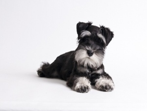

En la antiguedad romana ya se clasificaba a los perros por su desempeño y utilidad separándolos en perros de pastor, perros de guarda y perros de hogar o compañía. En 1885, se creó en Francia el primer libro de orígenes que dividió la especie canina en 29 secciones distintas. En 1984, la federación cinológica internacional fijó una definición de los conceptos de grupo, raza y variedad canina. En los procedimientos de estética y peluquería se debe conocer cada estándar, y su referencia del trabajo del manto para coincidir con el porte y estructura del perro. Como estilistas debemos conocer las proporciones y formas que definen a cada ejemplar, para destacar las virtudes y ocultar los defectos. El conjunto de inviduos que presentan caracteres comunes que los distinguen de otros ejemplares de su especie y que son transmisibles genéticamente se denominan raza. La clasificación de raza y especie surgen también la división de grupos definidos como conjuntos de razas que tiene en común un cierto número de caracteres distintivos y transmisibles. Y de la misma forma cada raza posee variedades, la variedad es una subdivisión dentro de la raza, cuyos individuos poseen además un carácter transmisible común que los ditinguen de los otros ejemplares de su raza. Ejemplo: Schanauzer, variedad de tamaño.
Razas de Perros

Podemos decir que cada raza posee su estándar, que se define como el conjunto de características propias, origen y aptitudes. Es útil conocer la funcionalidad u origen de las razas para predecir aproximadamente cómo deberá lucir el perro. A continución vamos a detallar los diez grupos en los cuales se clasifican las razas que conocemos:
- Grupo 1: Pastores. Perros de pastor y perros boyeros excepto Boyeros Suizos. Algunos: Pastor Belga, Alemán, De brie, Kuvansz, Collie, Pastor Inglés.
- Grupo 2: Guardia. Pinscher y Schanauzer, Molosoide y Boyeros Suizos. Algunos: Bouvier de Flandes, Bóxer, Dogo Argentino, Doberman, Rottweiler.
- Grupo 3: Terriers. Algunos: Fox, Welsh, Airedale, Westy, Scottish, Yorkshire, Norwich, Bull, American Staforshire, Kerry.
- Grupo 4: Teckel. Teckel: pelo duro, pelo largo, pelo corto.
- Grupo 5: Spitz. Perros de tipo Spitz y primitivos: Samoyedo, Akita,Chowchow, Siberiano, Shiba inu, Spits.
- Grupo 6: Sabuesos. Perros de tipo sabueso. Algunos: Basset, Beagle, Dálmata.
- Grupo 7: De muestra. Perros de muestra. Algunos: Braco, Pointer, Setter, Vizla.
- Grupo 8: Retriever. Perros cobradores. Algunos: Cócker Inglés y Americano, Golden, Labrador, Springuer Spaniel.
- Grupo 9: Compañía. Perros de compañía. Algunos: Bichón Frisé, Maltés, Bulldog Francés, Boston Terrier, Chihuahua, Caniche, Pequinés, Pug.
- Grupo 10: Lebreles. Lebreles. Algunos: Afganos, Galgo Italiano, Borzoi, Saluki.